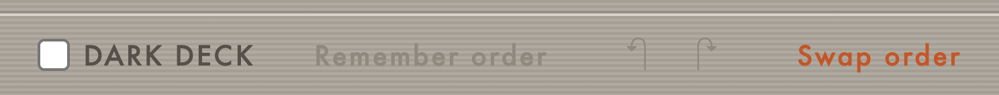
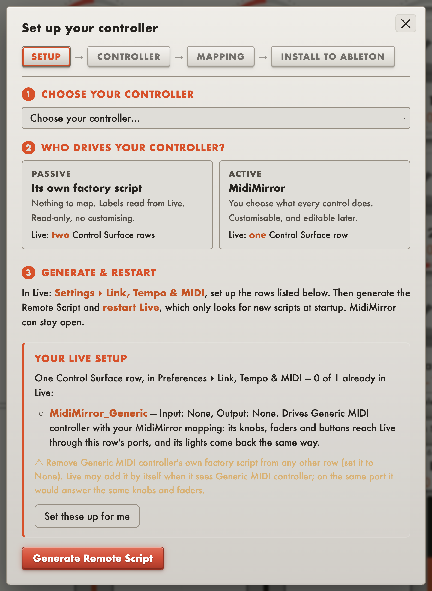
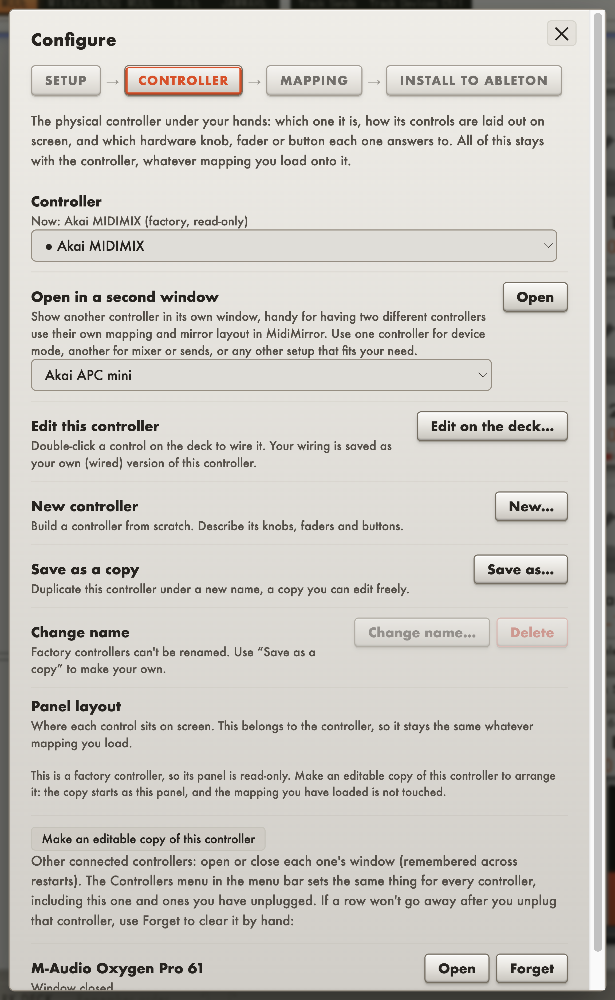

MidiMirror
A mirror for your MIDI controller: see what every knob is set to, and choose what each one does.
Ever forgotten what each knob on your MIDI controller does? Or wondered what knob 8 is mapped to in device mode? Even on a controller with a display (like the Launch Control XL MK3 or Push), you often only find out what a knob does once you move it.
MidiMirror was made to fix that. It has layout templates that copy the look of your MIDI controller, with every knob, fader and button in the same place. Put MidiMirror on a screen above your controller and you always know what each knob does, anywhere in your Live set.
Already have it? Manage on Gumroad ↗


Every device keeps its own layout
Save a knob layout for each device. Found the right setup for a device, like Live's Analog or a plugin like Diva, Serum or a TB-303? Maybe you want the filter cutoff always on knob 1 and the ADSR on the faders. Save it, and MidiMirror remembers that order for the device, so each parameter lands in the same place every time.
The layout belongs to the device, not the set. The order you chose for Diva comes back on every Diva, in every project, on any track, with no template to save and nothing to re-map. Use Swap order to drag knobs onto each other until the row is how you want it, then press the button and it is that device's layout from then on. A Forget button appears on any device you have saved, to go back to Live's own parameter order.



A guided setup that fills in Live's settings for you
Configure has four tabs (Setup, Controller, Mapping, Install To Ableton), and the first is a three-step card. Step one: choose your controller. Step two, who drives it: its own factory script (Passive: nothing to map, labels read from Live, read-only) or MidiMirror (Active: you choose what every control does). Step three gives you the exact place in Live (Settings ▸ Link, Tempo & MIDI) and what should be there. A Your Live Setup box counts the Control Surface rows you need, checks how many are already right, and spells out each row (name, input, output). "Set these up for me" writes the rows for you. Generate Remote Script is the one button you always press yourself.

Come back to the Controller tab once you are set up. It shows the controller in use ("Now: Akai MIDIMIX, factory, read-only"), and lets you open a second controller in its own window, go straight to editing the deck, or make an editable copy of a factory controller so the original stays as it is. Every controller you have opened is listed underneath, to reopen or forget.

A controller you design yourself
Double-click any control and choose its job: a mixer function on this strip or a named track, a parameter of the selected device by position or by name, an envelope stage found by name on the instrument in focus, or one exact parameter on one exact device on one exact track.

Your own modes. The modes that ship (Device, Mixer/Sends, Free and JamWare) are only a start. Add, rename and delete modes. A new mode starts empty and every control in it is yours to assign. Assignments belong to their mode, so a knob can do one thing while you mix and something else while you design sounds.
Holds and combos. A key can do one thing when tapped and another when held. Two keys pressed together can do a third. You can also give a control a key on your computer keyboard.
Then generate the script. Name your controller and MidiMirror writes a real Remote Script into Live's User Library under that name, so "Launch Control XL" appears in Live's Control Surface list as its own entry. Everything you built goes with it: assignments, labels, holds, modes, combos, the layout and the learned MIDI addresses.
The Akai MIDI Mix, the Novation Launch Control XL and the Novation Launch Control MK3 come with a ready-made script, and a generic profile covers anything else. Any controller can be taught: press Learn on a control, move the real knob, and its address is recorded.
Arrange the deck your way. Edit Layout lets you move, hide and add controls freely, so the panel matches your hardware.

The Drop
Press one key and the panel remembers where every knob and fader is. Build the track up, sweep the filters, ride the sends, push it all into the red, then press the same key again and everything snaps back at once.
While a drop is stored, every control in it shows an orange mark at the value it will return to: a pip on a knob's ring, or a line across a fader. So mid-take you can always see what one press will do.

Hold the drop key to re-aim it. Keep it held, move whatever you want the drop to return to, and let go: that is the new snap-back point. Nothing moves when you press or release, so you can change the return point mid-take without hearing the old one.
Two controllers, two windows
Run two controllers at once, each in its own Control Surface slot in Live with its own generated script, and you get two windows, one per controller, side by side. Each draws its own hardware, keeps its own saved setups, layout and modes, and listens only to its own MIDI.
There is nothing to switch between. You glance at a mirror while your hands are busy, and a glance cannot click. The first time, the two windows are placed side by side for you. Move either one and its place is remembered, per controller and per screen, even if you unplug that screen in between. A window appears when its controller does and closes when it goes, so changing Live's Control Surface slots rearranges the windows with no restart, and without taking focus from Live.
JamWare mode: your controller plays the other apps
Switch to JamWare mode and the panel becomes the front panel of another JamWare app. Every knob, fader and key gets the parameters of whichever of Chordinator or MutationStation you last used, named, with live values, in the app's own order. Turn a knob here and the app moves.
It follows focus the way device mode follows the blue hand: click into MutationStation and the panel is MutationStation's, click into Chordinator and it is Chordinator's. There is nothing to select or map and no port to choose. The app's groups take whole columns of the panel, so a switch sits right under the knobs it changes. A key linked to a switch lights up to show if it is on, both ways: flip it in the app and the key follows.
Nothing runs until you use it. The connection is only open while this mode is showing, and leaving the mode closes it on both sides. Free mode is still there beside it: Free hands your controls to Live's own MIDI map, and JamWare mode hands them to the app.
Features
- Device lock. Lock the blue hand to one device and keep selecting other tracks without your knobs following.
- Instrument mode. Device mode follows the selected track's instrument instead of the blue hand, so the knobs land on the synth every time you change track.
- Layers over modes. Tap a bank key and one knob row becomes the selected track's sends, or the four utility devices on every track. Everything else stays as it was.
- Ordered device control. The same knob does the same job on every instrument: cutoff, resonance and filter envelope first, then the device's own parameters, with the amp and filter envelopes on the faders.
- The master fader always holds track volume. It follows the selected track's volume in every mode, Free included, so one level is always under your hand. You can reassign it like any other control.
- Free mode hands every control to Live's own MIDI map on its own virtual port, so you can MIDI-learn anything without the script in the way.
- Pickup. A knob does nothing until it passes the value it is taking over, so nothing jumps when you switch modes or recall a drop.
- Transport on screen, for hardware with no transport keys.
- Undo, saved setups, and a "This setup" page that lists every control in every mode, what it does and the note or CC it sends, read from the script itself.
Why standalone
MidiMirror runs as its own app, not a plugin, and reaches Live only through the Remote Script it generates, the same way a hardware controller's own script does. If Live crashes, MidiMirror and your panel layout are safe. If MidiMirror hits a problem, Live keeps playing the set.
Requirements
Ableton Live is required. This is the one app in the range that does not work with other DAWs. Parameter names, the modes, the device in focus and the lock all come from a Remote Script, and only Live loads Remote Scripts.
macOS 12 or later on Apple Silicon. The Akai MIDI Mix, the Novation Launch Control XL and the Novation Launch Control MK3 come with ready-made scripts. Any other controller works once you have learned its addresses and generated a script for it, which the app does for you.
Intel Macs: beta. The app is built for Intel too and should work, but it has not been tested on an Intel Mac yet.
Signed and notarised for macOS, so it opens with a normal double-click, with no security warning.
Version 1.6.0
Setting it up
Open Configure ▸ Setup and follow the three steps: pick your controller, pick Passive or Active, and let Your Live Setup work out the Control Surface rows Live needs and offer to write them. Press Generate Remote Script, restart Live, and open the mirror on your second screen.
Move a knob and its name appears. Select another device and every label follows.